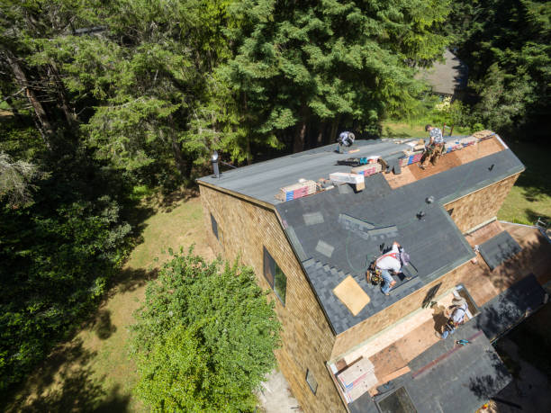

Expert skylight repairs in Ogdensburg New Jersey . Fix leaks, enhance natural light, and improve energy efficiency. Trust our skilled team for quality, lasting results. Contact us for a free quote today!
Click Here To Call Us (877) 848-1711Skylights are a fantastic way to bring natural light into your home, but they can sometimes need repairs to maintain their functionality and beauty. At our skylight repair company in Ogdensburg New Jersey we specialize in providing comprehensive solutions to all skylight issues. Whether you're dealing with leaks, cracks, or condensation buildup, our team has the expertise to handle it all. We use high-quality materials to ensure long-lasting results, so you won’t have to worry about recurring problems.
Timely skylight repairs not only enhance the aesthetics of your home but also improve energy efficiency by preventing heat loss and drafts. Our services in Ogdensburg New Jersey are tailored to meet your specific needs, ensuring that every repair is done to the highest standards. We thoroughly inspect the skylight to identify underlying issues, offering solutions that are both effective and affordable.
Customer satisfaction is our top priority. That’s why we offer fast response times, transparent pricing, and a dedicated team ready to restore your skylight's brilliance. When you choose us for your skylight repair needs in Ogdensburg New Jersey you’re choosing quality workmanship and peace of mind. Contact us today for a free consultation and let us bring back the natural light into your home!
Residential & commercial Skylight repairs
Quality services at affordable prices
Immediate 24/ 7 emergency services


At Brim Skylight Repairs, we understand that detecting a leaking skylight can be challenging but crucial for maintaining your home’s integrity. In Ogdensburg New Jersey identifying signs of a skylight leak early can prevent costly damage and extensive repairs.
One of the most common indicators of a skylight leak is water staining on your ceiling or walls. If you notice discolored patches or peeling paint near your skylight, it’s a clear sign that moisture is penetrating. Dampness around the skylight frame is another telltale sign, often caused by faulty seals or deteriorated flashing. Keep an eye out for any unusual damp spots or mildew, especially after heavy rain.
Another crucial sign is condensation or fogging between the panes of double-glazed skylights. This indicates that the seal has failed, allowing moisture to enter and compromise the skylight’s integrity. If you see foggy or cloudy glass, it’s essential to address the issue promptly to avoid further damage.
To ensure your skylight is functioning correctly, perform regular inspections, especially after severe weather. Look for cracks, gaps, or damaged flashing around the skylight, as these can lead to leaks if left unaddressed.
If you suspect your skylight might be leaking, don’t wait. Contact Brim Skylight Repairs in Ogdensburg New Jersey for a comprehensive inspection and professional repair services. Our experts are dedicated to keeping your home safe and dry by promptly addressing any skylight issues you may encounter.
Residential & commercial Skylight repairs
Quality services at affordable prices
Immediate 24/ 7 emergency services
When you need skylight services, working with local skylight contractors can make a significant difference. At Skylight repairs, our local contractors understand the unique climate and architectural styles of the area, which allows us to offer tailored repair solutions. We pride ourselves on our community ties and dedication to customer service, ensuring that you receive attentive and personalized care. Choose us for local expertise combined with quality services that keep your skylights in optimal condition.

Regular maintenance is the key to preventing costly skylight repairs. At Skylight repairs, we offer comprehensive skylight repair and maintenance services in Ogdensburg New Jersey to ensure your skylights remain in optimal condition. Our team schedules regular inspections and maintenance services designed to catch issues early and prolong the life of your skylights.
Whether it involves cleaning, sealing, or making minor repairs, our maintenance services are thorough and efficient. We educate our clients on best practices to care for their skylights, helping to prevent bigger problems down the road. Trust us for your skylight repair and maintenance needs, and enjoy peace of mind knowing your installations are expertly cared for.

Broken or cloudy skylight glass can detract from your home’s beauty and let moisture in. At Skylight repairs, we specialize in skylight glass replacement services . Our professional team understands the intricacies of various skylight types and will readily provide quality glass replacements that fit your exact specifications. We’re committed to using glass that enhances thermal performance and is built to withstand local weather conditions. Trust us for an efficient and meticulous process that rejuvenates the look and feel of your skylight.

If your skylight is equipped with a motor for opening and closing, ensuring its functionality is crucial. At Skylight repairs, we specialize in skylight motor repair services providing solution-oriented services to restore and optimize your automatic skylights.
Our technicians are skilled in troubleshooting various motor issues, from electrical problems to mechanical failures. We ensure that every repair is done with precision, so your skylight operates smoothly and efficiently. By choosing us, you can rest assured that your skylight motor will be back to functioning properly in no time.

Homes benefit immensely from the natural light and ventilation provided by skylights. However, wear and tear can lead to repairs being necessary. At Skylight repairs, we provide specialized skylight repair for homes in Ogdensburg New Jersey ensuring your skylights are in pristine condition. Our expert team conducts thorough assessments, identifies problems quickly, and implements effective solutions to restore your skylights’ beauty and functionality. We use quality materials for every repair, ensuring long-lasting results that improve your living space.
A business’s interior can vastly benefit from natural light, especially when skylights are properly maintained. At Skylight repairs, we offer skylight repair for businesses designed to minimize disruptions while ensuring you can continue your operations smoothly. Our experienced technicians work efficiently to handle repairs, keeping your skylights in ideal condition to inspire creativity and productivity in your workplace. Choose us for reliable service and expert repairs that will elevate your commercial space.

Choosing professionals for your skylight repair needs is crucial to ensure quality and reliability. At Skylight repairs, our skylight repair professionals are industry leaders with extensive training and experience. We are equipped with the latest technologies and tools to diagnose and address any skylight-related problems effectively. Our commitment to continuous education means we stay ahead of trends and techniques in the industry, guaranteeing that you receive the best service available. Choose our team for your skylight needs for unparalleled expertise and craftsmanship.

Maintaining your skylight doesn’t have to be an expensive endeavor. At Skylight repairs, we offer affordable skylight maintenance services in Ogdensburg New Jersey . Our maintenance packages are designed to fit every budget while ensuring high-quality service. Regular maintenance can help extend the life of your skylight, prevent costly repairs, and improve energy efficiency. Count on us to keep your skylights in pristine condition without breaking the bank.
Years Experience
Expert Technicians
Satisfied Clients
Compleate Projects
At Brim Skylight Repairs, we pride ourselves on being the premier choice for skylight repair services across all cities in Ogdensburg New Jersey . With years of experience and a dedicated team of professionals, we are committed to providing top-notch solutions that enhance the safety, functionality, and aesthetic appeal of your skylights.
Why choose us? First and foremost, our expertise sets us apart. Our technicians are highly trained and equipped with the latest tools and techniques to handle any skylight repair challenge. Whether you’re dealing with leaks, cracks, or damaged seals, we have the skills to deliver precise and long-lasting repairs.
Our commitment to customer satisfaction is unwavering. We understand that skylight issues can disrupt your daily life, so we offer prompt and reliable service to minimize inconvenience. We take the time to assess your skylight thoroughly and provide a detailed explanation of the necessary repairs, ensuring transparency and trust.
At Brim Skylight Repairs, we use only the highest quality materials and follow industry best practices to ensure durable and effective repairs. Our attention to detail and dedication to excellence means you can trust us to restore your skylight to its optimal condition.
We’re not just about fixing problems; we’re about preventing them. Our comprehensive repair services include thorough inspections and preventative measures to help you avoid future issues. Choose Brim Skylight Repairs for peace of mind and superior service in Ogdensburg New Jersey . Your skylight deserves the best, and so do you.
Are you dealing with a damaged or leaking skylight? Searching for skylight repair near me often leads to overwhelming choices. However, at Skylight repairs, we specialize in skylight repair services that are tailored to meet the unique needs of our clients . With years of extensive experience under our belt, our trained technicians are equipped to handle any skylight issue, from minor repairs to complete replacements. We understand how vital natural light is for your home, and our prompt, reliable service ensures that your skylight functions optimally once again. Choosing us means you benefit from local expertise, top-notch workmanship, and an unwavering commitment to customer satisfaction.
Skylight repairs do not have to break the bank. At Skylight repairs, we understand the importance of affordability when it comes to maintaining the quality of your property. Our affordable skylight repair services are designed to provide excellent craftsmanship without straining your budget. Combined with our transparent pricing strategy, there are no hidden fees—just clear, upfront quotes. Our skilled technicians utilize top-grade materials to ensure that repairs are durable and effective, giving you the best value for your investment. Choose us for quality, affordability, and peace of mind!
When it comes to skylight repairs, you want the best service available. That's where Skylight repairs steps in! We are proud to provide the best skylight repair services in Ogdensburg New Jersey underscored by customer reviews that speak to our unmatched craftsmanship and commitment. Our skilled team is equipped with the latest technology and tools to ensure thorough inspections and expert repairs. With us, you can expect punctual service, detailed attention to your skylight issues, and a guarantee that your skylight will be restored efficiently and effectively.
For homeowners, a malfunctioning skylight can compromise the beauty and energy efficiency of your home. At Skylight repairs, we offer specialized residential skylight repair services designed to restore light and comfort to your living spaces. Our skilled professionals can diagnose issues quickly, such as leaks, cracks, or condensation build-up, and provide comprehensive solutions, ensuring your residential skylights are not just functional but a source of pride. We value your home as much as you do and provide personalized service, honest assessments, and high-quality repairs tailored to your specific needs.
In the heart of any thriving business lies a commitment to creating an inviting atmosphere. Skylights can play a critical role in achieving such an ambiance. At Skylight repairs, our commercial skylight repair services focus on minimizing disruption to your operations while providing high-quality repairs. We recognize that time is money, so we work efficiently and effectively, ensuring that your business benefits from our prompt service without compromising quality. Our experienced technicians utilize commercial-grade materials suited for the demands ofbusiness environments.
Choosing local contractors for your skylight repair needs means opting for quicker response times and personalized service. As a leading local skylight repair contractor Skylight repairs prides itself on understanding the specific needs of our community. Our experienced team is familiar with the common skylight issues faced in this area, allowing us to provide informed recommendations and repairs tailored specifically for your local climate and architectural styles. Support your local economy and ensure quality workmanship by choosing Skylight repairs for all your skylight repair needs.
Leaks in skylights can lead to severe damage and costly repairs, making prompt attention essential. Our skylight leak repair services are designed to effectively address leaks at their source. At Skylight repairs, we specialize in diagnosing and repairing skylight leaks, no matter how complicated the issue may be.
Our expert technicians apply state-of-the-art leak detection methods and techniques to ensure we find and fix the problem quickly. After repair, we conduct comprehensive inspections to ensure the integrity of your skylights is restored. With our commitment to quality and thoroughness, we guarantee your satisfaction. Don't let a skylight leak disrupt your peace of mind; trust Skylight repairs for reliable repairs .
Skylights may fail unexpectedly, leading to potential leaks or structural damage. When disaster strikes, you need immediate solutions, and that’s where Skylight repairs comes in with our emergency skylight repair services . Our team is available 24/7, ready to respond to urgent calls. We prioritize emergency situations and utilize a streamlined process to quickly assess the problem, implement temporary fixes, and schedule permanent repairs. With our extensive experience, you can count on us to bring peace of mind during any skylight emergency.
Damaged or cracked skylight glass can diminish the aesthetics of your home or business and allow moisture to penetrate. At Skylight repairs, we specialize in skylight glass repair providing thorough evaluations to ensure a comprehensive approach to your repair needs. Whether it’s a simple crack or more extensive damage, our skilled technicians will provide prompt, professional service using high-quality glass products designed for durability. With our commitment to quality, we ensure your skylight glass repair will enhance both beauty and functionality.
The roof plays a vital role in protecting your home from the elements, and skylights are a part of that. If your skylight is experiencing issues, your roof might be at risk too. At Skylight repairs, we offer specialized skylight roof repair services . Our expert team is trained to identify and repair any underlying issues that may be affecting your skylight installation. We focus on maintaining the roof's integrity while ensuring that your skylight installation is secure and functioning efficiently.
Trust is essential when choosing a contractor for your skylight repairs. At Skylight repairs, we pride ourselves on delivering professional skylight repair services in Ogdensburg New Jersey . Our expert technicians are fully trained, insured, and knowledgeable about various skylight types, ensuring every repair meets industry standards. We use the latest materials and technology to provide a long-lasting solution to your skylight issues. Our commitment to outstanding service makes us a top choice for residents and business owners alike.
Skylight domes are stylish and functional, but they can face unique challenges due to their design. Whether it's a cracked dome or cloudiness caused by age, Skylight repairs specializes in skylight dome repair services . Our technicians have extensive knowledge of various dome styles and materials, allowing them to provide precise and effective repair options. We work diligently to restore the clarity and functionality of your skylight dome, ensuring that your indoor space remains bright and inviting. Trust our commitment to excellence and let us enhance the beauty of your skylights.
Skylight windows are a beautiful addition to any home or business, but when they require repairs, you need a reliable service provider. At Skylight repairs, we offer comprehensive skylight window repair services in Ogdensburg New Jersey . Our experienced technicians are equipped to handle any issue, from leaks to mechanical failures. We prioritize customer satisfaction, ensuring that every repair is done efficiently and effectively. Let us help you maintain the beauty and functionality of your skylight windows.
Understanding the cost of skylight repairs can seem daunting, but at Skylight repairs, we believe in transparency and clarity. Our skylight repair cost estimates are completely free and designed to provide you with the information you need to make informed decisions.
During our consultation, our knowledgeable technicians assess your skylight’s condition and discuss possible repair options. We provide a detailed estimate that covers all aspects of the repair process, ensuring there are no hidden fees. Our commitment to affordability means you receive high-quality services at competitive rates. Trust Skylight repairs to deliver clear and honest skylight repair cost estimates tailored to your needs.
Skylights not only enhance the beauty of your space but also improve energy efficiency. At Skylight repairs, we offer comprehensive skylight installation and repair services in Ogdensburg New Jersey making us your go-to choice for all things skylights. Our experienced team handles everything, from selecting the right skylight for your property to ensuring meticulous installation and ongoing maintenance.
For existing skylights, our repair services quickly address any issues, optimizing their performance and extending their lifespan. We pride ourselves on providing high-quality materials and craftsmanship to ensure your skylights are both functional and aesthetically pleasing. Choose us for your skylight installation and repair needs, and enjoy the natural light and beauty that skylights bring.
Every skylight is unique, and so are the issues they can face. At Skylight repairs, we offer custom skylight repairs to address your specific needs. Our experienced team evaluates each job individually, crafting personalized solutions that cater to the specific type of skylight you have and the problems it’s facing. We pride ourselves on our attention to detail and commitment to ensuring your skylight functions beautifully and efficiently after our repairs.
Proper flashing is critical for the longevity of your skylight installation. Damaged flashing can lead to significant water damage and costly repairs down the line. At Skylight repairs, we specialize in skylight flashing repair services . Our skilled technicians identify flashing issues and offer thorough repairs, ensuring that your skylights remain watertight and secure. With years of experience in the field, you can trust us to provide effective solutions that protect your investment.
Keeping your skylight clean is crucial for maintaining its clarity and maximizing natural light in your home. At Brim Skylight Repairs, serving all cities in Ogdensburg New Jersey we recommend a simple yet effective cleaning method to ensure your skylight remains in top condition.
The Best Way to Clean Your Skylight
To start, gather the right materials: a soft cloth or sponge, mild soap, and warm water. Avoid harsh chemicals or abrasive materials, as these can damage the glass or its protective coating. Begin by dusting off any loose debris from the skylight’s surface to prevent scratching during the cleaning process.
Next, mix a few drops of mild soap into a bucket of warm water. Dip your cloth or sponge into the soapy water, wring it out thoroughly, and gently clean the skylight’s surface using a circular motion. This helps remove dirt, grime, and any stubborn spots that may have accumulated over time.
For hard-to-reach skylights, consider using a telescoping squeegee or extension pole to safely clean from the ground. Ensure the squeegee blade is clean to avoid streaking. After washing, rinse the skylight with clean water to remove any soap residue, and then dry it with a clean, dry cloth to prevent water spots.
Regular maintenance is key. Clean your skylight at least once or twice a year, or more frequently if it’s exposed to heavy dust or pollution. If your skylight shows signs of damage or persistent cloudiness, contact Brim Skylight Repairs in Ogdensburg New Jersey for professional assistance.
Keeping your skylight clean not only enhances its appearance but also extends its lifespan. For expert advice and services in Ogdensburg New Jersey trust Brim Skylight Repairs to keep your skylight shining bright.
Ogdensburg is a borough in Sussex County, in the U.S. state of New Jersey. As of the 2020 United States census, the borough's population was 2,258, a decrease of 152 (−6.3%) from the 2010 census count of 2,410, which in turn reflected a decline of 228 (−8.6%) from the 2,638 counted in the 2000 census.
We repair all types of skylights, including fixed, vented, tubular, and custom skylights in Ogdensburg New Jersey .
Yes, we repair solar-powered skylights, ensuring they operate efficiently and provide proper ventilation .
Yes, we provide warranties on our repair work to ensure long-lasting results .
Yes, we are fully licensed and insured to provide skylight repair services .
Most skylight repairs are completed within a few hours, depending on the extent of the issue .
Yes, we repair and replace damaged flashing around skylights to prevent water intrusion in Ogdensburg New Jersey .
Regular maintenance and addressing minor issues early can help prevent cracking. We can help with inspections and repairs .
Yes, we can repair or replace cracked or damaged skylight frames to ensure they are structurally sound .
We offer same-day repair services for urgent issues, depending on availability .
Yes, if your skylight is beyond repair, we offer complete skylight replacement services in Ogdensburg New Jersey .
Yes, we specialize in identifying and repairing leaks to ensure your skylight is watertight .
Yes, we offer repair and replacement services for skylight blinds and shades .
We specialize in skylight repair, replacement, sealing, and leak prevention services for homes and businesses .
Noise can indicate loose components or wind infiltration. Contact us for an inspection to fix the issue .
Common signs include leaks, drafts, condensation, or visible damage to the glass or frame. We can provide a professional inspection .
Yes, we specialize in repairing and replacing skylight flashing to prevent leaks .
Yes, we can replace broken or damaged skylight glass to restore its clarity and function in Ogdensburg New Jersey .
Yes, we provide emergency repair services to address leaks and damage that need immediate attention in Ogdensburg New Jersey .
Proper sealing and insulation can prevent fogging. We can assess your skylight and offer solutions .
Yes, in addition to repairs, we offer professional skylight installation for homes and businesses in Ogdensburg New Jersey .
Leaks are often caused by damaged seals, improper installation, or wear and tear over time. We can identify and fix the issue in Ogdensburg New Jersey .
Yes, we can address condensation issues by improving insulation and ventilation around your skylight .
Regular inspections, cleaning, and prompt repairs can help maintain your skylight and prevent leaks .
Yes, we service both residential and commercial properties for skylight repairs and maintenance .
Yes, we offer solutions to improve skylight ventilation and prevent moisture buildup in your home or business .
We recommend an annual inspection to catch potential issues early and prevent costly damage .
Yes, fixing leaks and drafts can improve energy efficiency by preventing heat loss and reducing your energy bills .
Costs vary based on the extent of the damage, but we offer free estimates to give you a clear idea of the repair cost in Ogdensburg New Jersey .
If the skylight is still structurally sound, repair can be a cost-effective solution. If it's very old, replacement may be better .
Yes, we repair skylight damage caused by hail, including cracked glass and dented frames .
Brim Skylight Repairs did an excellent job on our skylight repair in Ogdensburg New Jersey . Their team was knowledgeable and courteous, and they completed the repair quickly. The skylight looks and performs like new. We appreciate their high level of service and professionalism.
Profession
The team at Brim Skylight Repairs did a remarkable job fixing our skylight in Ogdensburg New Jersey . They were responsive, professional, and completed the repair with high-quality craftsmanship. We are extremely satisfied with the result and appreciate their excellent customer service!
Profession
Brim Skylight Repairs provided outstanding service for our skylight repair in Ogdensburg New Jersey . Their team was prompt, professional, and efficient, ensuring the job was done right the first time. We’re very happy with their work and would recommend them to anyone in need of skylight repairs.
Profession